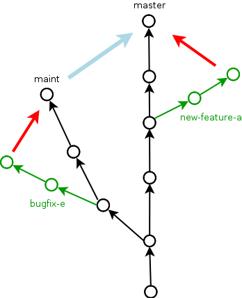

Or rather, what is reproducible data analysis?
Any research that involves statistical data analysis will usually contain many figures and tables of statistical results, and also numerous statistical results within the text.
The goal of reproducible research — or rather, reproducible data analysis — is that anyone working independently could recreate all of these results exactly.
(This slide was taken from https://github.com/mark-andrews/sips2019)
The following three criteria seem necessary for a given data analysis to be reproducible.
@gentleman2007statistical introduced the concept of a research compendium, which is a single package that contains all of the raw data, all the code for all the data analysis pipeline, and dynamic documents that generate all the final reports.
(This slide was taken from https://github.com/mark-andrews/sips2019)
Docker
documenting code

Staging area to local to remote
right click file and select revert
click push.
New pull requestCreate pull requestFiles changed+ that appearsstart a reviewFinish your reviewApprove and Submit.mean(1:10, na.rm = TRUE)comments explain why, if your explain what the code does, consider refactoring.
YAGNI (you aint gonna need it)
Use https://style.tidyverse.org/ for R if there’s no reason for a different one.
calc_the_thing()x[, 1]mean(x, na.rm = TRUE), x == y, x <- yone command per line, don’t use ;
add_a_to_b <- function(a = "a long argument",
separator = ", ",
b = "another long argument") {
str_c(a, separator, b) # only use return for early returns
}Some things can’t be done within rstudio.
git stash save uncommitted changes and reset to last commitgit stash pop apply the last stashed changegit reset --hard origin/master dangerously throw away local changes and go back to what’s on the servergit revert head make a new commit that reverses the previous one